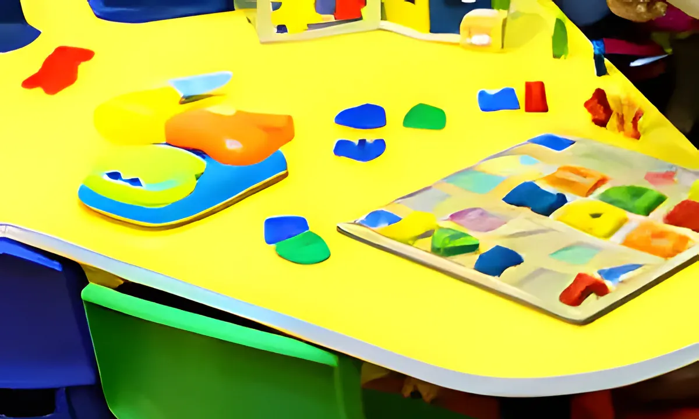

Home / About us
Your home away from home
We are an established nursery in Sharjah for children from 3 months to 4 years. We took the greatest care over every part of it: planning, fitting out and designing the space, choosing good educational materials, and hiring experienced, qualified and caring practitioners. Your child's best interest is always at heart.


Our philosophy
Our ethical principles run through everything we do: nursery spaces designed to be kind to the environment, friendly and approachable staff, healthy and nutritious food, and the policies and procedures we follow every day.
Our ethos
Al Lulu is designed on purpose for children from 3 months to 4 years, with a careful balance between care and education.
Each area is designed differently, so children can explore and discover, follow their own interests and stretch what they understand and can do.
Children are free to explore the nursery at their own pace. Focused learning is planned every day, and good resources are out at all times, so children can come back to an idea, take it further or change it as they wish.
Our vision
A better society for tomorrow, by helping today's children grow into well-rounded, mature people who will go on to become tomorrow's leaders.
“Play is the highest expression of human development in childhood, for it alone is the free expression of what is in a child's soul.”
Our mission: learn through play
We see play as the language of childhood. It's how children gain and practise new skills, grow their understanding and show what they can do.
What children learn is important, but how they learn it matters even more. Through play we help children build confidence and independence, and learn to choose, reason, reflect, imagine and empathise.
Our skilled, experienced practitioners weave in planned, adult-led activities that spark new learning, so each day has the right balance of play children start themselves and play a grown-up supports.
Curriculum
Al Lulu is a child-centred preschool following the British Early Years Foundation Stage (EYFS). We support growth in every area: physical, mental, emotional and social, under the guidance of experienced, qualified practitioners.
We write an individual development plan for each child and work closely with parents, sharing what we see so your child's thinking and people skills grow at home and here.
Come and see the rooms
The best way to know a nursery is to visit. Call or WhatsApp and we'll find a time.